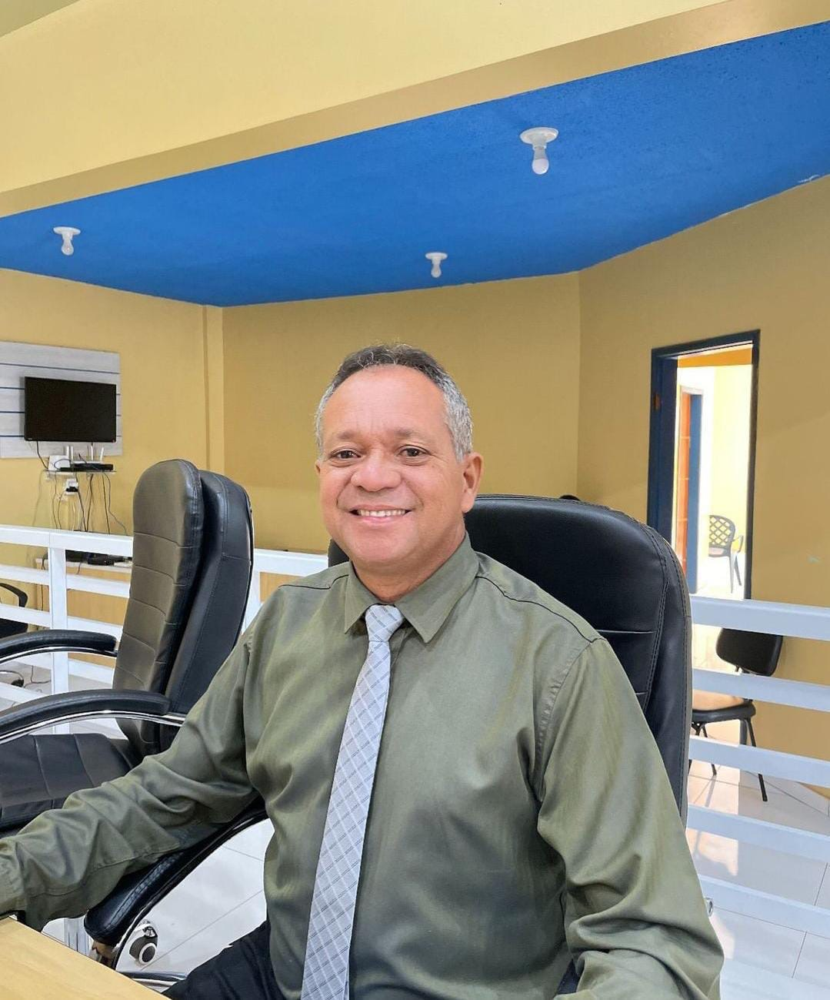

Pedro Alves de Sousa, known as Pedro Violão, was born on November 28, 1972, in São Raimundo das Mangabeiras, Maranhão, Brazil. Coming from a humble family, he left school early to work and help his mother raise their ten children. Years later, he completed his studies during the COVID-19 pandemic with the support of his wife, Lucélia, and his daughter, Luara.
Pedro worked in various jobs, including construction assistant and mail carrier, and began his political career in 2008. He held positions such as Chief of Staff and Secretary of Infrastructure and Transport. In 2020, he became the most voted councilman in the history of São Raimundo das Mangabeiras.
Despite the challenges, Pedro was known for his generosity and dedication to the community. His life and political career were tragically cut short by his death on May 20, 2024, caused by liver cirrhosis, leaving a lasting legacy and much longing.
